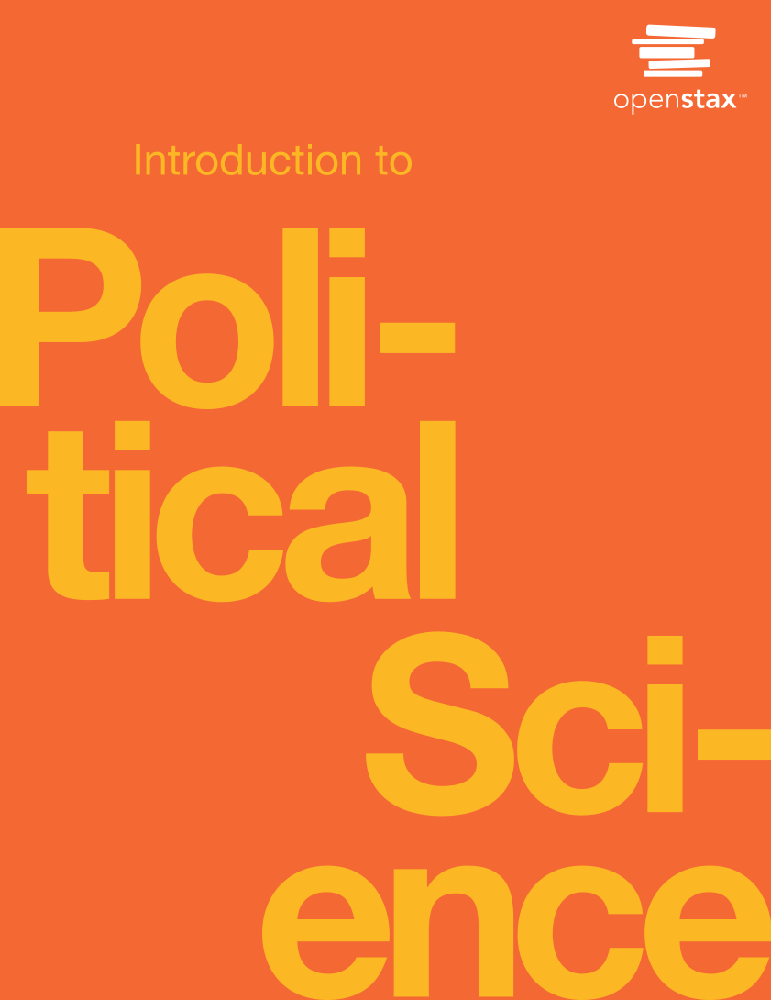

Lecture 1
München, 20. April 2023
| Classes | Student Presentations |
|---|---|
| Thursdays | Friday |
| 20th Apr - 22nd Jun | 21st Jul |
| 13:15 - 14:45 | 10:00 - 14:30 |
| HfP, H.103 | HfP, H.003 |
Nikolai Gad
nikolai.gad@hfp.tum.de
Room: H.409
Office Hours: Tuesdays, 3-4PM (but please email beforehand)
Kein Deutsch (sorry, Ich lerne)
Links to slides uploaded to Moodle after lectures
Slides are also available at https://9kolai.github.io/POL61501-S23/lecture1.html
Main research interests: (digital) Democratic Innovation, deliberation, political parties, online political participation
But currently mainly do research on Euro-scepticisim in EU parliament.
Will be available on Moodle page of course
https://www.moodle.tum.de/More resources will be uploaded here
Two parts:
You will be marked on both your presentation and subsequent facilitation of a discussion.
You can use both of these elements to illustrate that you are able to:
Practicals:
Can take many forms, but should include the following elements:
Hand-in deadline: 15th September 2023 through Moodle.
All mandatory readings will be uploaded to Moodle.
Main text book: Rom, Mark C., Masaki Hidaka, and Rachel Bzostek Walker. 2022. Introduction to Political Science. Houston, Texas: OpenStax, Rice University.
Migt be adjusted throughout the semester - so always check Moodle if you missed a class!
Main focus on (western) democracies
Big question with no easy answer.
However, the word simply means rule (kratos) by the people (demos)
But many ways to define the people, and define how they should rule.
What is an institution?
"An institution is an organization with a set of rules and practices that inform its members about their relationships with one another and how they should interact. Institutions may be formal, with written rules, or they may be informal." (Rom, Hidaka, and Walker 2022, p. 28)
Examples? Schools, families, religions, criminal gangs, etc.
Political institutions: Government agencies, local councils, parliaments, political parties, political movements, NGO's, media, international org. etc.)